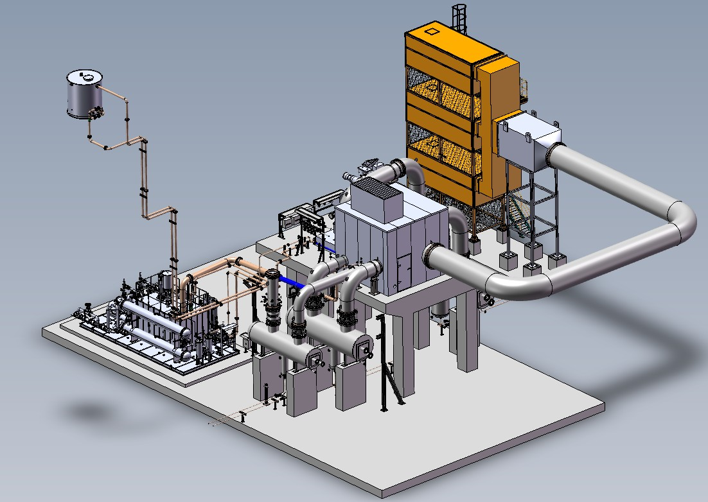
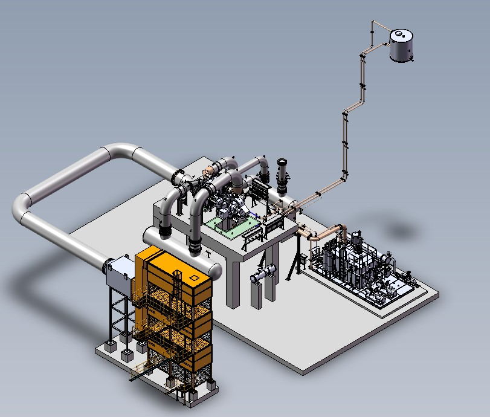
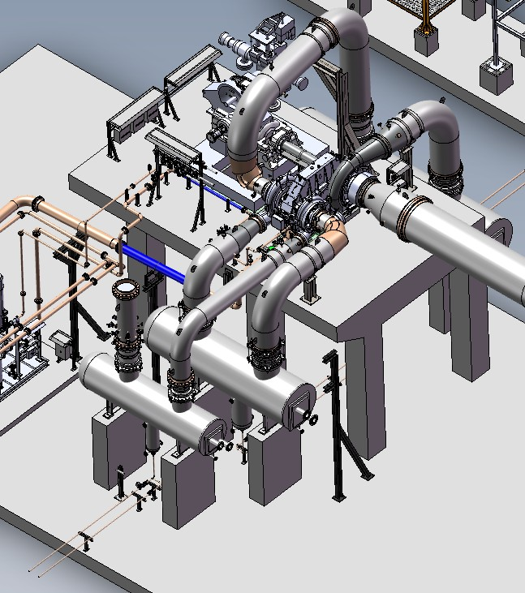
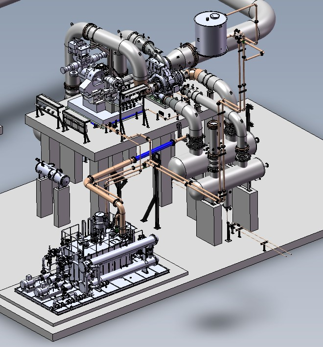
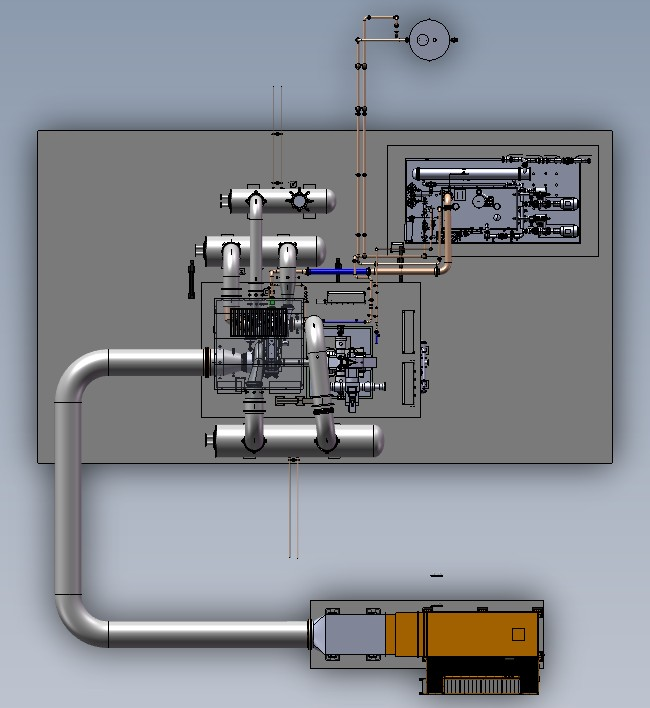

3-stage air compressor
Steam-turbine driven package; the turbine itself was customer-supplied.
3-stage air compressor package for Sinopec, China. Steam turbine was customer-supplied and remained outside my design scope.

Steam-turbine driven package; the turbine itself was customer-supplied.
Intercoolers and twin oil coolers on cooling water; overhead rundown tank for coast-down.
Complete 3D package, process piping, lubrication system, layout, drawings and manufacturing/FAT support.




Filter-silencer house and inlet guide vanes, three stages on an integrally geared machine with water-cooled intercoolers, blow-off valve and silencer, discharge at 6.013 bar(a). The steam turbine was customer-supplied; my scope ended at the compressor-side coupling.
Oil reservoir with heater and demister, shaft-driven main and motor-driven auxiliary pumps, accumulator, twin water-cooled coolers and filters, and an overhead rundown tank at least 5 m above the compressor centreline for coast-down lubrication.
A three-stage integrally geared air compressor driven by a customer-supplied steam turbine. Air passes inlet guide vanes, three stages and two water-cooled intercoolers, and leaves at 6.013 bar(a).
My scope ended at the compressor-side coupling, shown by the scope-break line. A shaft-driven main oil pump on the bull gear and a blow-off valve with silencer complete the package.
Original illustrative animation based on my typical P&ID for this package · generic tags · stage-to-pinion arrangement shown for illustration. Use the step buttons to walk through it.
DESIGNED: Complete 3D compressor package in SolidWorks, including package layout, process gas/air piping and supports, lubrication/oil system, intercoolers, rundown tank and compressor-side coupling/interface.
REVIEWED: Detailed 2D manufacturing drawings prepared by subordinate designers to ensure alignment with the 3D design and manufacturing requirements.
COORDINATED: Overall plant/package layout, customer tie-in points, China manufacturing technical support, technical queries and FAT activities.
Created the complete package model in SolidWorks and established the overall equipment arrangement.
Designed compressor-side process gas/air piping and supports, including package interfaces and customer tie-in points.
Designed the lubrication/oil system, associated fittings and lubrication unit, integrating it with the compressor package.
Integrated intercoolers and the rundown tank within the package arrangement.
Reviewed subordinate 2D manufacturing drawings against the 3D model and package requirements.
Supported China manufacturing, technical queries, FAT and final package/foundation interface documentation.
Routing the large-diameter inlet duct from the tall filter-silencer house to the compressor on its elevated deck, with supports, expansion joints and access kept clear.
Arranging the machine on a raised deck with the intercoolers below it, so interstage piping stays short and the coolers can be maintained and their bundles pulled.
Placing the rundown tank at least 5 m above the compressor centreline and routing its piping so it can feed the bearings by gravity during coast-down.
Defining the compressor-side coupling, alignment and lube-oil connections to a customer-supplied steam turbine without owning the turbine design.
Other equipment and components to the applicable universal standards. Steam turbine to the turbine vendor's standards (outside my scope).
FAT and SAT photographs are not published: mobile phones are not permitted on the factory floor under Atlas Copco policy, except on approved visits.
This project strengthened my experience in complete compressor-package integration under API 672 requirements, connecting the compressor with process piping, lubrication, intercooling, package interfaces and manufacturing documentation while maintaining a clear boundary around the customer-supplied steam turbine.
← Back to projects